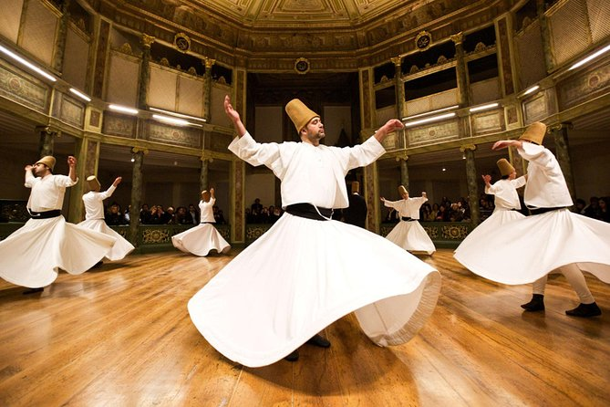

旋转冥想
Osho 旋转冥想是一种古老的苏菲技巧。当整个身体在移动时，你可以观察到你的中心处于宁静和静止的状态。这种冥想分为两个阶段，每个阶段都旨在引导你进入深层的旋转冥想状态。
练习此冥想： 下载音频并在以下步骤中跟随音频进行练习。
1. 第一阶段：45分钟
苏菲旋转是一种最古老且最强有力的技巧之一。睁开眼睛旋转，就像孩子们转圈一样。你的身体像轮子一样旋转，而你的内在自我保持在中心。保持身体柔软，眼睛睁开但不聚焦，保持安静。
前15分钟慢慢开始，然后在接下来的30分钟内逐渐加速。当你旋转得如此之快，以至于无法保持站立时，你的身体会自然倒下。不要控制或计划倒下——如果你的身体足够柔软，你将轻轻着地。
2. 第二阶段：15分钟
倒下后，立即翻转到肚子上，使肚脐与地面接触。感受你的身体融入大地，就像婴儿紧贴母亲的胸膛。闭上眼睛，保持被动和安静，至少15分钟。
有些人在旋转冥想期间可能会感到恶心，但这种感觉通常会在两三天内消失。如果持续不消失，应停止冥想。